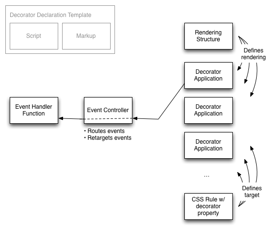

This document is a non-normative reference, which aims to provide an overview of how Web Components work. It summarizes the normative information in the respective specifications in an easy-to-digest prose and illustration.
Status of this Document
This section describes the status of this document at the time of its publication. Other documents may supersede this document. A list of current W3C publications and the latest revision of this technical report can be found in the W3C technical reports index at http://www.w3.org/TR/.
Publication as an Working Draft does not imply endorsement by the W3C Membership. This is a draft document and may be updated, replaced or obsoleted by other documents at any time. It is inappropriate to cite this document as other than work in progress.
As mentioned earlier, this document is a work in progress. It was initially written as a thought exercise to tie up all concepts, associated with the Web components into one coherent, non-normative narrative. Then, each concept will be refined and developed into a separate normative document, subsequently feeding back changes, concepts, and terms into this document. This iterative process is still continuing today, and produced the following specifications:
Once all information is extracted into the respective normative documents and this document is updated to accurately describe, as well as summarize the information in the normative documents, this document will be finalized and become the actual introduction for Web components.
2 Introduction
The component model for the Web (also known as Web Components) consists of four pieces designed to be used together to let web application authors define widgets with a level of visual richness not possible with CSS alone, and ease of composition and reuse not possible with script libraries today.
These pieces are:
templates, which define chunks of markup that are inert but can be activated for use later;
decorators, which apply templates to let CSS affect rich visual and behavioral changes to documents;
custom elements, which let authors define their own elements, including new presentation and API, that can be used in HTML documents; and
shadow DOM which defines how presentation and behavior of decorators and custom elements fit together in the DOM tree.
Both decorators and custom elements are called components.
3 Templates
The <template> element contains markup intended to be used later—by script or some other template-aware consumer (like <decorator> and <element> elements that are described later).
The content of the <template> element is parsed by the parser, but it is inert: scripts don't run, images aren't downloaded, and so on. The <template> element is not rendered.
In script the element has one property, content, which contains the inert DOM structure, defined by the template.
For example, a Web developer may want to define the DOM structure that is created multiple times in the document, and then create an instance of it anytime it's needed.
<templateid="commentTemplate"><div><imgsrc=""><divclass="comment"></div>
…
</div></template>
var t = document.querySelector("#commentTemplate");
// Populate content and img[src] values in the template.
// …
someElement.appendChild(t.content.cloneNode());
Appending inert DOM to a document node makes it go "live", as if the DOM tree was just parsed from markup (setting innerHTML).
4 Decorators
A decorator is something that enhances or overrides the presentation of an existing element. Like all presentation aspects, the application of decorators is controlled by CSS. However, being able to specify the extra presentation using markup is unique to decorators.
The <decorator> element contains a <template> element, which specifies the markup to use for rendering the decoration.
This decorator and stylesheet would cause the following markup:
<divclass="poem">
Two roads diverged in a yellow wood,<br>
…
</div>
To be rendered as if it was this markup (omitting user agent styles for brevity):
<divclass="poem"style="font-variant: small-caps;"><divstyle="position: relative;">
Two roads diverged in a yellow wood,<br>
…
<divstyle="position: absolute; left:0;…"></div></div></div>
If the document changes so that the selector with the decorator property no longer matches—typically when a selector with the property no longer matches or the rule with this property was changed in the inline styles, the decorator is unapplied, returning the rendering of the element back to the pre-decoration state.
Even though the decorator CSS property can point to any resource on the Web, the decorator will not be applied unless its definition is loaded by this document.
The markup that generates the presentation is limited to be purely presentational: it may never run script (including inline event hanlders) and it cannot be editable.
4.1 Events in Decorators
Decorators can also attach event handlers to implement interactivity. Because the decorators are transient, it is not useful for the decorator to attach event listeners to the nodes in the template or rely on any state, since it perishes any time decorator is applied or unapplied.
Instead, decorators register event listeners with an event controller. To register an event listener with an event controller, the template includes a <script> element. The script is run once when the decorator element is parsed or inserted into the document, or loaded as part of an external document.
Fig. Event handler registration
The event controller is passed to the script in the this pointer.
The call to listen means that when the button with id b is clicked, the handler h is called.
The event controller routes events originating in any of the places that the decorator is applied to the event handler.

Fig. Event routing and retargeting
When the event listener is called, the target of the event is the content that the decorator was applied to, and not content from the template. For example, given the decorator specified above, this content:
Clicking on the button would show a dialog containing [object HTMLSpanElement].
This retargeting is necessary because the decorator specifies presentation; it does not affect the structure of the document. Since it is in the document, the content the decorator is applied to is the target of the event.
Similarly, if script changes the content of the template later, this doesn't have any effect on the decorator, just like setting the textContent of a <script> element doesn't cause the script to execute again.
The decorators have no way to change the state of the decorating DOM tree, other than triggering application of a different decorator.
4.2 Decorators Example
Here is an example of how decorators could be used to implement a simple variant of the details element:
This uses two decorators. One presents the details view closed; the other presents the details view open. Each decorator uses an event handler to respond to clicks by toggling the open state of the element. The content element's select attribute will be explained in detail later.
5 Custom Elements
Custom elements are new types of DOM elements that can be defined by authors.
Custom elements can define presentation aspects like decorators. Unlike a decorator, which can be applied or unapplied to a given element, the element's type is fixed. So custom elements can also define new state and behavior, which decorators can't do because of their ephemeral nature.
The element element defines a custom element. It specifies the type of element it's a refinement of using the extends attribute:
The extends attribute specifies the tag name of the kind of element this element is an extension of. Instances of the custom element will have the tag name specified here.
The name attribute specifies the name of the custom element, by which it will be referred to in markup. The naming space of the name is the same as element tag names, and to avoid collisions, the x- prefix is required for custom element value.
Different user agents interpret HTML elements differently, however all of their interpretations are guided by the semantics of HTML.
Because not all user agents support custom elements, authors should extend the HTML element that has the closest meaning to their new kind of element. For example, if they are defining a custom element that is interactive and responds to clicks by doing some action, they should extend button.
When there isn't a HTML element that is semantically close to their custom element authors should extend a semantically neutral element like span.
5.1 Presentation
A custom element may optionally include a template:
If a custom element includes a template, a copy of the template content is inserted into the custom element's shadow DOM by the generated constructor. Shadow DOM is described below.
5.2 Using Custom Elements in Markup
Because custom elements use existing HTML tag names—div, button, option, and so on—we need to use an attribute to specify when an author intends to use a custom element. The attribute name is is, and its value is the name of a custom element. For example:
<buttonis="x-fancybutton"onclick="showTimeClicked(event);"><!-- use -->
Show time
</button>
5.3 Using Custom Elements in Script
You can instantiate a custom element from script using the standard document.createElement facility:
var b = document.createElement("x-fancybutton");
alert(b.outerHTML);// will display '<button is="x-fancybutton"></button>'
Also, you can specify the constructor attribute on the <element> element to explicitly add a JavaScript property for the element constructor on the window object. That constructor can then be used to create instances of the custom element:
<elementextends="button"name="x-fancybutton"constructor="FancyButton">
…
</element>
…
var b = new FancyButton();
document.body.appendChild(b);
A custom element can expose API to script by putting properties on the constructor's prototype object, in a <script> that is nested inside the <element> element:
In order to provide graceful fallback behavior, the this pointer within the <script> element points to parent HTMLElementElement instance:
<elementextends="table"name="x-chart"constructor="Chart"><script>if(this=== window)// Use polyfills to emulate custom elements.// …else{// …}</script></element>
Mechanically, the code inside of the <script> element when it is a child of either <element> or <decorator> elements is executed like this:
In situations where having constructors on window object is undesirable, the custom element author can use generatedConstructor property of the HTMLElementElement:
One cannot create a custom element by setting an is attribute on an existing DOM element. Doing so will result in a no-op:
var div = document.createElement("div");
div.setAttribute("is","foo");
alert(div.is);// displays null
alert(div.outerHTML);// displays <div></div>
5.4 Element Upgrade
As the definition of a custom element is loaded, each element with the is attribute set to the name of that custom element is upgraded to the custom element. The upgrade process should be perceptually equivalent to removal of the element from the document and its replacement by the custom element instance.
As each element is replaced, a non-bubbling, non-cancellable event is dispatched to the element that has been removed. Scripts that want to delay interacting with part of a document until the custom elements are present can listen to this event:
function showTimeClicked(event){// event.target may be an HTMLButtonElement or a FancyButtonif(!event.target.razzle){// razzle, part of the FancyButton API, is missing// so upgrade has not happened yetevent.target.addEventListener('upgrade',function(upgradeEvent){
showTime(upgradeEvent.replacement);});return;}
showTime(event.target);}function showTime(b){// b is FancyButton}
Authors who want to avoid the flash of unstyled content can use CSS to change the presentation of the ordinary element until the custom element is loaded.
5.5 Lifecycle Methods
A custom element can optionally subscribe to these four lifecycle callbacks:
created—called by the generated constructor, passing a ShadowRoot instance, created from the <template> element or null, if there was no <template> element in the declaration.
attributeChanged—called whenever an attribute of the element is changed. The arguments are the name, old value and the new value.
inserted—called after the custom element is inserted into the tree. If a custom element needs to start loading resources or start timers, it can do that in this method.
removed—called after the custom element is removed from the tree. A custom element can stop timers that it does not need when it is not in the tree.
The callbacks are invoked with this as the instance element.
The inserted and removed callbacks may be called multiple times if the element as the element is inserted and removed from the tree.
You can subscribe to these callbacks by invoking HTMLElementElement.lifecycle method:
In addition to HTML elements, you can also extend a custom element by specifying the custom element's name as the value of the extends attribute in the <element> element:
There are several opportunities for error when setting up custom elements:
The tag name of the element does not match the value of the extends attribute of the custom element, eg. <div is="x-fancybutton">, but <element name="x-fancybutton" extends="button">. In this case, the is attribute is thrown away while parsing.
The value of the is attribute does not correspond to any currently defined element. This situation is treated as if the definitions hasn't been loaded yet, and the element will be upgraded as soon as the definition arrives.
The value of the extends attribute does not correspond to any currently defined element. In this case, the element's definition is put on hold as if it hasn't loaded, until the element mentioned in the extends attribute is loaded.
The value of the is attribute does not begin with an x-. This is resolved by dropping the is attribute altogether.
The value of the name attribute does not begin with an x-. The definition is considered invalid and is ignored.
6 Shadow DOM
Shadow DOM is a tree of DOM nodes. Shadow DOM can be applied to a custom element declaratively, by including a template, or to any element imperatively using JavaScript.
When an element has shadow DOM, the element's children are not rendered; the content of the shadow DOM is rendered instead.
<div><divclass="stuff"><content><!-- all children will appear here --></content></div></div>
The <content> element acts as an insertion point for rendering only—it does not change where the elements appear in DOM. When rendering, the element's children just appear in place of the <content> element. And yes, you can have more than one <content> in the shadow DOM subtree! The select attribute gives you a handy way to choose which children appear at which insertion point. If there is more than one <content> element, the tree order dictates when each of these elements takes a pass at selecting the children. Once the child is selected to be rendered at one insertion point, it can't be claimed by another one.
<div><contentselect="h1.cool"><!-- all h1.cool children will
appear here --></content><divclass="cool"><contentselect=".cool"><!-- all .cool children
(except the ones that are h1.cool) appear here --></content></div><divclass="stuff"><content><!-- all remaining children will
appear here --></content></div></div>
6.2 Multiple Shadow Subtrees
Any element can have more than one shadow DOM subtree. Don't look so puzzled! Suppose you are extending a DOM element that already has a shadow DOM subtree. What happens to that poor old tree? We could just ditch it for the new arboreal hotness, but what if you don't want to? What if you want reuse it?
For this noble purpose, we have a special <shadow> element, which acts as an insertion point for the, you guessed it, the previously applied shadow DOM subtree of this element (also known as the older tree). For instance, you can take existing range slider (that's <input type="range">) and extend it, adding your extra shadow schmutz to it:
<div><shadow><!-- range slider renders here --></shadow><divclass="ticks"> … </div></div>
Since an element can have multiple shadows, we need to understand how these shadows interact with each other and what effect these interactions have on rendering of the element's children.
First, the order in which the shadow DOM subtrees are applied is important. Because you cannot remove a shadow DOM, the order is typically like this:
element shadow DOM (I got here first, nyah!)
shadow DOM of the element sub-class
shadow DOM of the element sub-sub-class
…
some shadow DOM added using script
decorator shadow (applied and removed with CSS rules—not technically a shadow DOM, but can, too, have <content> and <shadow> elements)
Next, we take this stack of shadow DOM subtrees and traverse it backwards, starting with the last-applied (or youngest) subtree. Each <content> instance, encountered in tree order, grabs the element's children that it needs as usual.
This is where things get interesting. Once we're done shuffling the children into their right places to render, we check and see if we have a <shadow> element. If we don't, we're done.
If we do, we plop the next shadow subtree in our list in place of the <shadow> element, and rinse-repeat first replacing <content>insertion points, then <shadow> until we reach the start of the list.
And then—ta-da!—we have our wondrous shadow DOM Yggdrasil, ready for rendering.
Once it's had its way, the next most recent shadow DOM subtree—if even allowed to—can rummage through the remaining children.
Cycle repeats until either the current shadow DOM subtree has no <shadow> element, or we've processed the oldest DOM subtree for this element.
6.3 CSS and Shadow DOM
When building a custom element, you often want to prevent document styles from interfering with what you've painstakingly crafted.
Lucky for you, the shadow DOM subtree is surrounded by an invisible boundary, only letting the user agent styles apply by default. The inheritance still works as usual—more on that later.
You can relax this boundary with the apply-author-styles attribute on the <template> element. With the attribute present, document's author styles start applying in the shadow DOM subtree.
Conversely, you can make the boundary even stronger by setting the reset-style-inherifance attribute on the <template> element. With the attribute present, all styles are reset to initial values at the shadow boundary. No more need for lengthy reset stylesheets! Just set the attribute and start with a clean slate.
There is a similar boundary between the <content> element and element's children, rendered in its place. The styles from the shadow DOM subtree do not apply to the element's children.
both div#foo>a and div#foo a will select the child (light link), not the anchor in the shadow DOM (shadow link).
If the component authors wish to allow some styling of the shadow DOM subtree by the component users, they can do so with CSS variables. The variable definitions specified on the shadow DOM host element are also resolved inside of the shadow DOM subtree.
6.4 Events in Shadow DOM
To ensure that the elements of the shadow DOM subtree are not exposed outside of the subtree, there's a fair bit of work that happens while dispatching an event from inside of the subtree.
First, some events (like mutation and selectstart events) are just plain prevented from escaping out of the shadow DOM subtree—they are never heard from the outside.
Those events that do cross the shadow DOM boundary are retargeted—their target and relatedTarget values are modified to point to the element that hosts the shadow DOM subtree.
In some cases, like DOMFocusIn, mouseover, mouseout events have to be given extra attention: if you're moving a mouse between two elements inside of the shadow subtree, you don't want to be spamming the document with these events, since they will appear as non-sensical babbling after the retargeting (what? the element just reported that the mouse just moved from itself back to itself?!)
6.5 Making More Shadows
As implied before, you can always add a shadow DOM subtree to any DOM element in one line of code:
var shadow =newShadowRoot(anyElement);
This does two things:
Creates a brand-spanking-new ShadowRoot instance, which you should imagine as this shadowy, invisible other side of your element. It's like a tiny document that lives inside of our custom element, and serves as the root of your shadow DOM subtree.
The important thing to remember is that while you can add new shadow DOM subtrees this way, you can never remove them: they just keep stacking up.
7 Decorators vs. Custom Elements
Decorator shadows are never accessible with DOM. When the decorator is created, the shadow DOM subtree is placed in a cold, dark place—for storage. Once the decorator is applied to an element, this shadow DOM subtree is used to produce the rendering, but its nodes are never accessible from script. You can, however listen to events that happen inside the decorator shadow using EventController.
An easy way to think of the decorator shadow is a projection. You can see it, but never can actually touch it.
On the other hand, the custom element shadow (or any shadow DOM subtree created using script) is a real DOM tree that you as the custom element author can change as you please.
Another important difference between the two is the fact that you can unapply a decorator. On the other hand, once you've instantiated a custom element, its qualities—including its shadow DOM subtree—are inherent part of element's identity.
8 External Custom Elements and Decorators
Custom elements and decorators can be loaded from external files using the link tag:
<linkrel="components"href="goodies.html">
Only decorator elements, element elements and script elements are interpreted by the UA. The DOM of this document is not available to script. The origin of the embedding document is used as the origin of the embedded document. Script runs as though it was async defer. The custom element definitions and decorators are not made available until the scripts have run. Documents which are retrieved cross-origin use CORs to determine that the definitions are designed to run cross-site.
9 Isolation, Confinement and Encapsulation
Component isolation can be viewed as combination of two parts:
confinement, when the document wants to prevent a component from accessing document information, and
encapsulation, when the component wants to prevent the document from accessing inner state of the component.
Component encapsulation is partially enforced with shadow DOM, ensuring that shadow DOM nodes never appear in the event dispatch, range, focus-related DOM accessors or any APIs that query DOM nodes. It is up the author of the component to choose whether the inner state is exposed.
Component confinement is trickier, but possible using existing primitives, such as iframe or workers. The general solution would be to treat the component as the corruptible agent, which is responsible for the component user interface and interaction with the document. The component would then load a worker (or an iframe) and communicate with it using postMessage:
<!--- located at http://example.com/adorable/button --><elementname="x-adore-button"extends="button"><script>var service =newWorker("http://example.com/adorable/service/worker.js");
service.onmessage =function(event){// process responses from the service.…}// set up UI.…// start interacting with the worker.
service.postMessage("hello");</script><template>I adore this</template></element>
10 Example
Suppose we we want to display a clickable map of timezones instead of a select element. Here's how one could implement this using decorators:
<decoratorid="timezone-map"><script>var timezones =["PST",…];function createHandler(timezone){this.listen({
selector:"#"+ timezone,
type:"click",
handler:function(){// Decorators are late-bound, we must check for type.if(this instanceof HTMLSelectElement)this.selectedIndex =this[timezone].index;}});}
timezones.forEach(createHandler,this);</script><template><svg …><gid="worldShapes"> … </g><gid="timezoneShapes"><pathid="PST" …><pathid="CST" …></g>
…
</svg></template></decorator>
select—the value is a list of selector fragments, addressing immediate children of the element.
<decorator>
Defines a new decorator. Typically, you would also give it an id attribute to make it addressable from CSS.
Context: anywhere in the document.
Children: <template> and <script>
Attributes:
apply-author-styles—if true, the author styles of the document apply to the shadow DOM subtree of the element. If false (default), the author styles do not apply.
<element>
Defines a new custom element.
Context: anywhere in the document.
Children: <template> and <script>
Attributes:
constructor—name of the generated constructor function. If specified, a key by this name is added to the window object, referring to the element's generated constructor.
extends—tag name of the element or a defined custom element constructor name that the new custom element extends.
name—the name of the custom element constructor that is generated by this definition.
apply-author-styles—if true, the author styles of the document apply to the shadow DOM subtree of the element. If false (default), the author styles do not apply.
Defines an inert chunk of DOM that can then be used for creating DOM instances in an unknown parsing context.
Context: anywhere in the document.
Children: any element.
Appendix C. Custom Element Constructor Properties
Here are some more properties of the generated constructor and FancyButton instances:
typeofFancyButton⇒"function"FancyButton.call({})⇒throwsObject.getPrototypeOf(FancyButton.prototype)===HTMLButtonElement.prototype ⇒true
document.body.lastChild === b ⇒true
b.tagName ⇒"button"
b.outerHTML ⇒"<button is="FancyButton"></button.html>"
b instanceofFancyButton⇒true
b instanceofHTMLButtonElement⇒true
Acknowledgements
Thanks to Alex Komoroske, Alex Russell, Darin Fisher, Dirk Pranke, Divya Manian, Erik Arvidsson, Hayato Ito, Hajime Morita, Ian Hickson, Jonas Sicking, Rafael Weinstein, Roland Steiner, and Tab Atkins for their comments and contributions to this document.